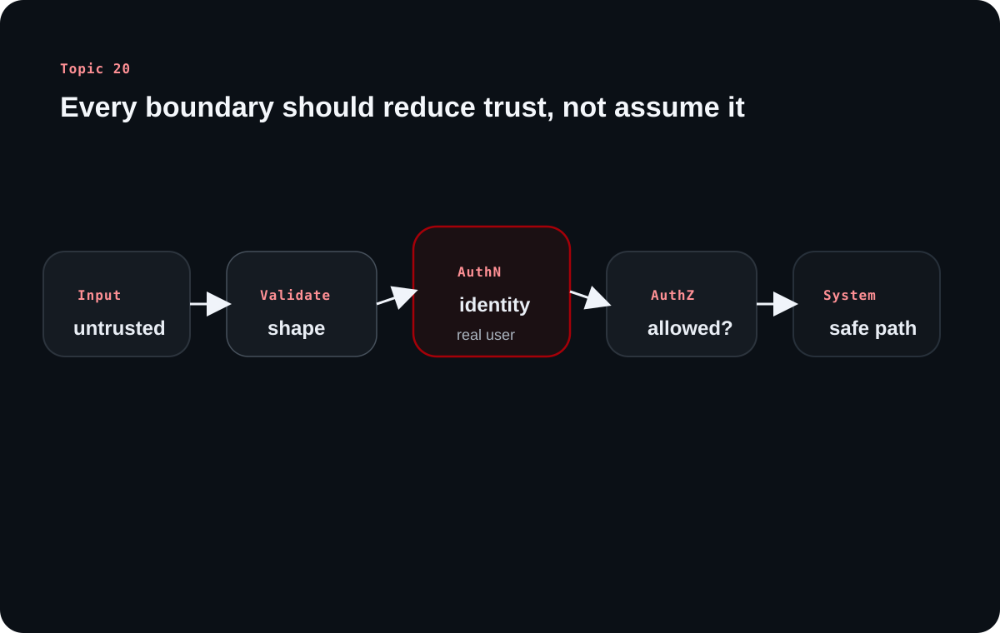

Topic 20 brings backend security back to fundamentals: attackers look for assumptions, boundaries, and places where user-controlled data is treated as trusted. The article organizes the source into a practical defensive mental model rather than a loose list of scary terms.
Inside this article
Threat modelInjectionAuthNAuthZXSSCSRFMisconfig
The source's strongest lesson is mindset. Secure backend code comes from repeatedly asking what assumption a hostile user could break at every boundary: input, identity, permissions, browser trust, and system configuration.
Chapter 1
Backend security starts with the attacker's mental model, not with a checklist
The source begins by making security a way of thinking before it becomes a list of controls.
Backend security failures are expensive because backends hold power and trust
The source emphasizes that backend security failures can damage finances, operations, and user trust. Unlike many frontend mistakes, backend mistakes often affect credentials, stored data, payments, and privileged actions directly.
That is why the topic is framed as a mindset problem as much as a tooling problem.
Attackers probe developer assumptions and trust boundaries
A normal user follows the expected path. An attacker looks for the hidden assumptions behind that path: that input is clean, that a client is honest, that a route will only receive certain values, or that a request came from the right place.
The source's recurring question is simple and useful: what could go wrong here if the caller is actively hostile?
Learning diagram

Backend security gets stronger when every boundary turns untrusted input into constrained, verified, and permission-checked operations before the system acts.
Chapter 2
Injection attacks happen when the system confuses user data with executable intent
The source spends real time on injection because it is one of the clearest examples of broken trust boundaries.
SQL, NoSQL, and command injection are the same class of mistake in different languages
When user input is concatenated into SQL, shell commands, or flexible query objects, the system can mistake hostile data for part of the program it should execute. The source uses SQL injection as the classic example, then broadens the idea to NoSQL and command injection.
The core defensive lesson is stable across all three: keep code and data separate rather than letting user input reshape the command itself.
Parameterized queries and safe command APIs are boundary controls, not conveniences
Prepared statements and parameterized queries exist to keep user input as data. Command APIs that separate executable and arguments do the same thing outside the database. Input validation helps too, but the safest design is still to avoid string-built commands entirely where possible.
The source also notes privilege restriction. Even if an injection happens, the damage is smaller when the backend's database role cannot perform destructive operations casually.
Clarified note
The shared rule across SQL, NoSQL, and shell boundaries is simple: never let user-controlled text define the structure of the operation itself.
Chapter 3
Authentication is about proving identity without turning credentials into reusable disaster
The source then moves into identity, starting with the risks of storing and checking passwords badly.
Passwords should be hashed, salted, and expensive to brute-force
Plain-text storage is unsafe because breaches then reveal credentials directly. The source recommends strong password hashing approaches such as bcrypt or Argon2id, plus salting so identical passwords do not collapse into identical stored values.
Slow hashing also matters because it raises the cost of brute-force attempts and reduces the value of stolen password hashes.
Sessions and JWTs solve identity persistence differently, but both need disciplined handling
Session IDs should be unpredictable and stored safely, often through HTTP-only cookies. JWTs avoid server-side session storage, but they create other operational challenges such as revocation and token lifetime control.
The source also stresses rate limiting around authentication endpoints, because brute-force protection is part of identity defense, not an unrelated infrastructure concern.
Chapter 4
Authorization decides what an authenticated user may do, and it fails quietly when assumptions leak
Broken authorization is often just trusted identity without trusted ownership checks
The source emphasizes broken object-level authorization and the difference between horizontal and vertical abuse. A user may be authenticated correctly and still be allowed to read or modify resources they should never reach.
That means every sensitive route needs ownership or role checks tied to trusted server-side identity, not to client-supplied assumptions about who the user is.
The backend must derive permissions from trusted state, not from client claims alone
A recurring security instinct is to distrust identifiers and permissions that arrive from the client. The server should resolve who the user is and what they may access from trusted authentication state and server-side rules.
That is how authentication and authorization become a chain instead of two disconnected features.
Chapter 5
Browser-facing attacks and security misconfigurations still matter deeply to backend engineers
The source closes by connecting backend responsibility to browser-executed risk and unsafe environment defaults.
XSS and CSRF exploit trust between browser, session state, and user intent
Cross-site scripting abuses unsafe content rendering to run attacker-controlled code in the browser context. Cross-site request forgery abuses the browser's willingness to send ambient credentials with requests the user did not truly intend.
Even though the browser is involved, backend choices still matter: response encoding, token validation, cookie strategy, and request verification all influence how exposed the system is.
Security misconfiguration turns otherwise safe systems into easy targets
Weak defaults, overprivileged roles, exposed secrets, debug behavior in production, and permissive trust settings all widen the attack surface. The source treats these as mindset failures as much as config failures, because they come from assuming a safe environment that does not exist.
That is why secure backend engineering ends with habits: question assumptions, minimize privileges, and choose safer defaults before traffic arrives.
Overall takeaway
What to remember
Backend security improves when every boundary treats user input as untrusted, separates data from executable intent, verifies identity carefully, checks permissions server-side, and avoids leaking trust through weak defaults or careless configuration.